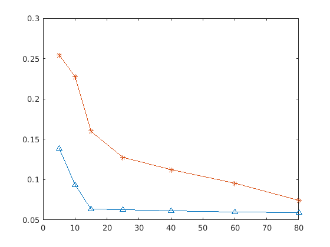

aveN =
0.4195 0.5420 0.3968 0.3038 0.2434 0.1446 0.1147
aveOne =
0.1598 0.1324 0.0471 0.0354 0.0340 0.0314 0.0305
aveFour =
0.2433 0.1304 0.1166 0.0891 0.1063 0.1102 0.0940
aveEight =
0.1947 0.1059 0.0797 0.0810 0.0646 0.0952 0.0593
aveAll =
0.2543 0.2277 0.1601 0.1273 0.1121 0.0953 0.0746
aveDec1 =
0.1312 0.1422 0.0290 0.0256 0.0194 0.0131 0.0300
aveDec4 =
0.1595 0.0816 0.0797 0.0806 0.0858 0.0863 0.0779
aveDec8 =
0.1256 0.0556 0.0823 0.0822 0.0776 0.0809 0.0684
aveDecAll =
0.1388 0.0931 0.0636 0.0628 0.0609 0.0601 0.0588
aveAll =
0.2543 0.2277 0.1601 0.1273 0.1121 0.0953 0.0746
